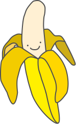
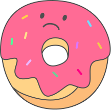
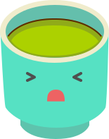
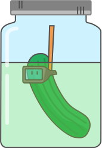
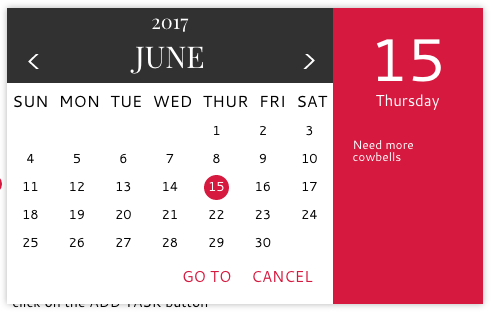
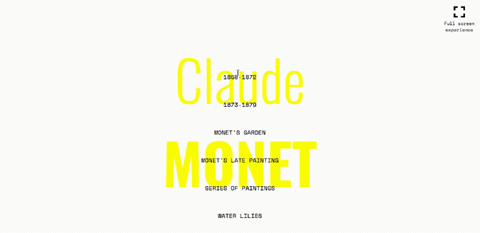
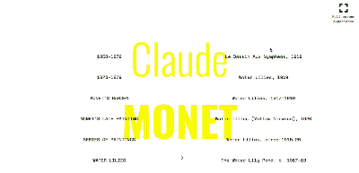

I AM A
DESIGNER
CODE-DESIGN=UGLY MESS
To me, being a successful front end web developer requires you to be desginer as well. The efficiency and usefullness of the lines of code that has been tirelessly typed will only be as good as how the user use them.
WORK EXPERIENCE
I was contracted as a Junior Experience Designer by DAN Auckland to assist in the web refresh for Vodafone. We had to use a comprehensive style guide from Vodafone HQ to update the old Vodafone NZ website. We mainly used Sktechapp for the desgin and Invision to share the finished work with the clients.
VISUAL/ EXPERIENCE DESIGNER





INTERACTION DESIGNER


ICONS AND LOGOS
AM I
AM